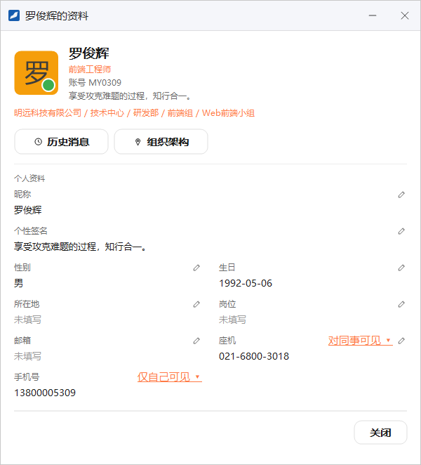
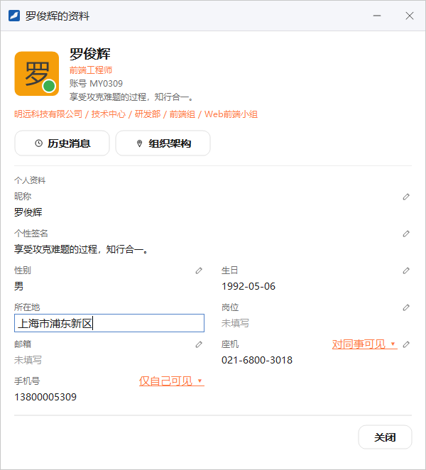
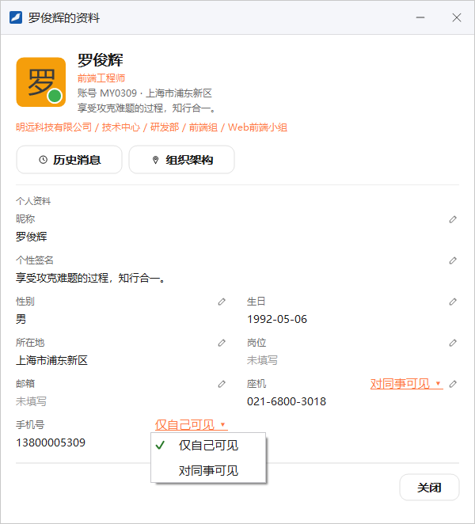
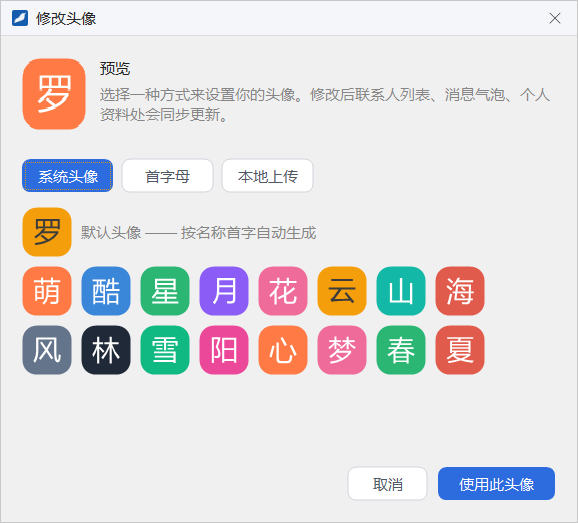
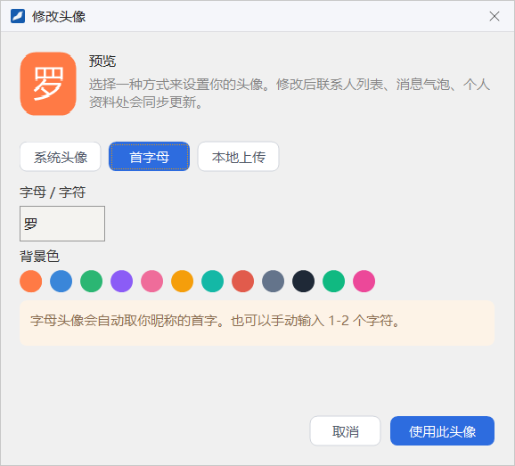
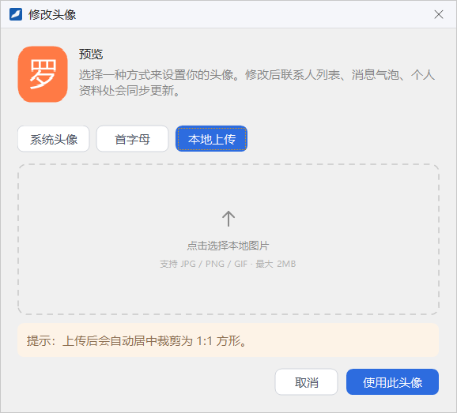
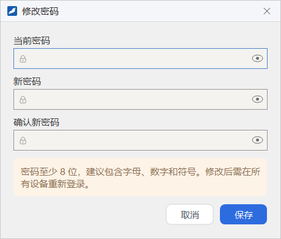
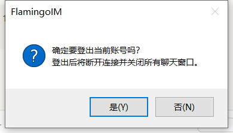

个人资料与账号
本章介绍怎样查看和修改自己的资料、控制手机号和座机对同事是否可见、更换头像、修改登录密码，以及登出当前账号。
- 适用：全体员工
- 需要：已登录
打开本人资料
以下任意一种方式都会打开「你的名字的资料」窗口：
- 点主面板左下角的 ≡，在系统菜单中选 个人信息；
- 点主面板头部的昵称；
- 在「联系人」页签的组织架构树里双击自己，或右键自己选 查看资料；
- 在主面板的搜索结果里选中自己。

窗口上半部分是头像、姓名、岗位、账号、个性签名和所在部门的完整路径；下半部分「个人资料」列出昵称、个性签名、性别、生日、所在地、岗位、邮箱、座机和手机号，没有填写的项显示「未填写」。
- 点 组织架构：窗口关闭，主面板切到「联系人」页签，逐级展开部门并选中你所在的那一行，方便看清自己在组织架构中的位置。
- 点左上角的头像：打开 修改头像 对话框，见本章「修改头像」一节。
修改资料
每一项资料右侧的铅笔图标表示这一项可以修改：

- 点要修改的那一项右侧的铅笔图标，该项就地变成输入框（性别是下拉框，可选保密、男、女）。
- 输入新的内容，例如在「所在地」里填写「上海市浦东新区」。
- 按 Enter 保存；在别处点一下也会保存；按 Esc 放弃修改，恢复原来的内容。
保存成功后新内容立即显示出来，填写了所在地时，它还会显示在头部账号的后面，例如「账号 MY0309 · 上海市浦东新区」。同事看你的资料时看到的也是新内容。
| 资料项 | 填写要求 |
|---|---|
| 昵称 | 即同事看到的姓名，不能为空 |
| 生日 | 按 YYYY-MM-DD 格式填写，如 1992-05-06 |
| 邮箱 | 必须包含「@」 |
| 座机 | 只能包含数字、空格和 + - ( ) |
内容不符合要求时，保存时会弹出提示说明原因，并停留在这一项上等你修改。
手机号与座机的公开范围
手机号和座机属于个人联系方式，你可以分别决定是否让同事看到：

- 点「手机号」或「座机」标题右侧的橙色文字（显示当前的公开范围）。
- 在弹出的菜单中选择：
- 对同事可见：同事查看你的资料时能看到这个号码；
- 仅自己可见：号码只在你自己的资料窗口里显示，同事看不到。
选择后立即生效。示例中罗俊辉的座机设为「对同事可见」，手机号设为「仅自己可见」。
修改头像
点主面板头部的头像，或本人资料窗口左上角的头像，打开 修改头像 对话框。对话框顶部是预览，下面有三种设置方式，选好后点 使用此头像。修改后，联系人列表、消息气泡和个人资料等处会同步更新。
系统头像

第一个是默认头像，按你名字的第一个字自动生成；下面是一组带不同字样和底色的系统头像，点一个即可在顶部预览。
首字母

字母头像默认取你昵称的第一个字。也可以在 字母 / 字符 框里手动输入 1~2 个字符，再在 背景色 里选一种底色。
本地上传

- 点虚线框里的「点击选择本地图片」，选一张图片。支持 JPG、PNG、GIF 格式，大小不超过 2MB。
- 图片会自动居中裁剪为 1:1 的正方形，在顶部预览中确认效果。
- 点 使用此头像 上传。
修改密码
管理员为你开通或重置账号后，建议尽快把初始密码改成只有自己知道的密码。点主面板左下角的 ≡，在系统菜单中选 修改密码（也可以在「系统设置 → 账号安全」里点 修改密码 一行的 修改）：

- 在 当前密码 中输入现在使用的密码。
- 在 新密码 和 确认新密码 中两次输入相同的新密码。输入框右侧的眼睛图标可以临时显示明文。
- 点 保存。
新密码至少 8 位，建议同时包含字母、数字和符号，并且不能与当前密码相同。修改成功后会提示「密码修改成功！其它设备需用新密码重新登录。」
登出
需要换一个账号登录，或离开电脑前想退出当前账号时，可以登出：
- 点主面板左下角的 ≡，在系统菜单最后一组中选 登出（也可以右键托盘图标选 登出）。
- 在确认框中点 是(Y)。

登出后客户端断开与服务器的连接、关闭所有聊天窗口并回到登录窗口，程序本身不会退出。如果想彻底关闭程序，请用托盘菜单的 退出，见「认识主面板」。